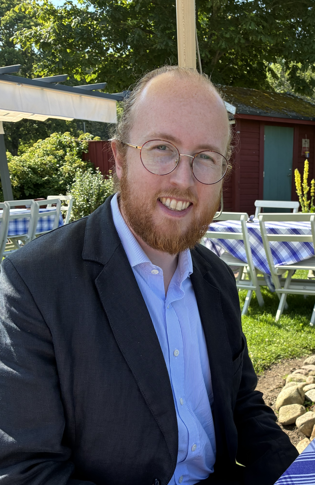

Theoretical physicist interested in discovering new fundamental physics with the help of computational methods.
I specialise in precision calculations using computational lattice QCD and effective field theory within the Standard Model, our best current theory for fundamental physics. Once the calculations are confronted against high-precision experimental measurements, we can test our theory and search for new particles and forces beyond the Standard Model.
Nordic Lattice Workshop 2026: The annual Nordic Lattice meeting will take place May 18-20 at the University of Edinburgh. Please consider signing up!
Current position:
Previous positions:
Education:
I specialise in precision calculations using lattice QCD and effective field theory. Lately I am focussing on machine-learning techniques for lattice QCD.
Specific topics of interest: Hadron decays/scattering for CKM elements and charge-parity violation; Gradient flow for neutron physics; Muon anomalous magnetic moment
My latest publications can be found on inspire
Membership:
RBC/UKQCD lattice collaboration
Nordic Lattice Network
Software:
Grid and Hadrons for lattice simulations
vegas for numerical Monte Carlo integration (also package in Python)
FORM for analytical calculations
Lecturing:
Supervision: If you are interested in a project, contact me
I am generally interested in outreach, so feel free to contact me if you have an opportunity in mind
Editorial board member of and author for Fysikaktuellt, magazine of the Swedish Physical Society
Speaker at Pint of Science in Edinburgh, 2025/2026
Author of a chapter in Kosmos 2023, yearbook of the Swedish Physical Society
Speaker at NMT-Dagarna at Lund University, 2017/2018/2019
Email: nils.hermansson-truedsson at ed.ac.uk